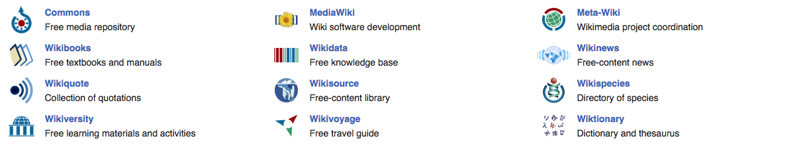

Not logged in Talk Contributions Create account Log in
From today's featured article

The history of the penny of Great Britain and the United Kingdom from 1714 to 1901, the period in which the House of Hanover reigned, saw its transformation from a small silver coin to a larger bronze piece. All bear the portrait of the monarch on the obverse; copper and bronze pennies have a depiction of Britannia on the reverse. During most of the 18th century, the penny was a small silver coin rarely seen in circulation. Beginning in 1787, the chronic shortage of good money resulted in the wide circulation of private tokens, including ones valued at one penny. In 1797 Matthew Boulton gained a government contract and struck millions of pennies. The copper penny continued to be issued until 1860, when they were replaced by lighter bronze coins; the "Bun penny", named for the hairstyle of Queen Victoria on it, was issued from then until 1894. The final years of her reign saw the "Old head" pennies, coined from 1895 until her death in 1901. (Full article...)
Recently featured: 70th Infantry Division (United Kingdom) Camille Saint-Saëns Mark Oliphant
Archive By email More featured articles
Did you know...

- ... that Frogmore Paper Mill (pictured) is the oldest surviving mechanical paper mill in the world?
- ... that Beerbohm, a cat owned by the Gielgud Theatre, became famous for entering actors' dressing rooms, attacking props, and wandering across the stage during performances?
- ... that photographer Evgenia Arbugaeva won the trust of a Siberian mammoth-tusk hunter by stitching up his injured hand?
- ... that Sam Hornish Jr. of Panther Racing won the 2002 Delphi Indy 300 by 0.0024 seconds, the closest margin of victory in Indy Racing League history?
- ... that Türkan Rado was the first female professor of law in Turkey?
- ... that despite John Fogerty's agreement with hippie generation political concerns, his lyrics for Creedence Clearwater Revival's "Don't Look Now (It Ain't You or Me)" were critical of hippie attitudes?
- ... that footballer Willie Anderson agreed to join the Portland Timbers despite not knowing where the team was based?
Archive Start a new article Nominate an article
In the news

- Shortly after launch from Baikonur, Kazakhstan, Soyuz MS-10 suffers a booster failure, with both crew members surviving an emergency landing.
- Hurricane Michael makes landfall in Florida, United States, as a Category 4 storm, after causing at least 13 deaths in Central America.
- The Intergovernmental Panel on Climate Change releases a report on actions urgently needed to confine global warming to 1.5 °C.
- The Nobel Memorial Prize in Economic Sciences is awarded to William Nordhaus and Paul Romer (pictured) for integrating climate change and technological innovation, respectively, into "long-run macroeconomic analysis".
- ... that footballer Willie Anderson agreed to join the Portland Timbers despite not knowing where the team was based?
Archive Start a new article Nominate an article
Recently featured: 70th Infantry Division (United Kingdom) Camille Saint-Saëns Mark Oliphant Archive By email More featured articles
Did you know...

October 11: National Coming Out Day (international)
- 1142 – The Treaty of Shaoxing was ratified, ending the Jin–Song Wars, although sporadic fighting continued until 1234.
- .1311 – The peerage and clergy of the Kingdom of England published the Ordinances of 1311 to restrict King Edward II's powers.
- 1840 – Bashir Shihab II (pictured) surrendered to the Ottoman Empire and was removed as Emir of Mount Lebanon after an imperial decree by Sultan Abdülmecid I.
- 1950 – A field-sequential color system developed by Hungarian-American engineer Peter Goldmark became the first color television system to be adopted for commercial use, only for it to be abandoned a year later.
- 1987 – Sri Lankan Civil War: The Indian Peace Keeping Force began Operation Pawan to take control of Jaffna from the Tamil Tigers and enforce their disarmament as a part of the Indo-Sri Lanka Accord.
Grigory Potemkin (b. 1739) · Henry J. Heinz (b. 1844) · Dorothea Lange (d. 1965)
More anniversaries: October 10 October 11 October 12
Today's featured picture

The Crown of the Andes is a votive crown originally made for a large statue of Mary, the mother of Jesus, in the cathedral of Popayán, Colombia. The oldest parts of the crown are the orb and cross at the top, which date to the 16th century. The diadem was made in approximately 1660, and the arches were added around a century later. The crown is adorned with 450 emeralds. The largest, the "Atahualpa Emerald", may have belonged to the Inca Emperor Atahualpa (1497–1533) and been seized from him when he was captured in 1532 by Francisco Pizarro, a Spanish conquistador. In 1936 the crown was sold by its owners to an American businessman. It is now in the collection of the Metropolitan Museum of Art in New York City.
Crown: Unknown. Photograph: Metropolitan Museum of ArtOther areas of Wikipedia
- Community portal – Bulletin board, projects, resources and activities covering a wide range of Wikipedia areas.
- Help desk – Ask questions about using Wikipedia.
- Local embassy – For Wikipedia-related communication in languages other than English.
- Reference desk – Serving as virtual librarians, Wikipedia volunteers tackle your questions on a wide range of subjects.
- Site news – Announcements, updates, articles and press releases on Wikipedia and the Wikimedia Foundation.
- Village pump – For discussions about Wikipedia itself, including areas for technical issues and policies.
Wikipedia's sister projects
Wikipedia is hosted by the Wikimedia Foundation, a non-profit organization that also hosts a range of other projects:
Wikipedia languages
This Wikipedia is written in English. Started in 2001, it currently contains 5,732,514 articles. Many other Wikipedias are available; some of the largest are listed below.
- More than 1,000,000 articles: Deutsch • Español • Français • Italiano • Nederlands • 日本語 • Polski • Português • Русский • Svenska • Tiếng Việt • 中文
- More than 250,000 articles: العربية • Bahasa • Indonesia • Bahasa Melayu • Català • Čeština • Esperanto • Euskara • فارسی • 한국어 • Magyar • Norsk • Română • Srpski • Srpskohrvatski • Suomi • Türkçe • Українська
- More than 50,000 articles: Bosanski • Български • Dansk • Eesti • Ελληνικά • English (simple form) • Galego • עברית • Hrvatski • Latviešu • Lietuvių • മലയാളം • Norsk • nynorsk • Slovenčina • Slovenščina • ไทย
Complete list of Wikipedias